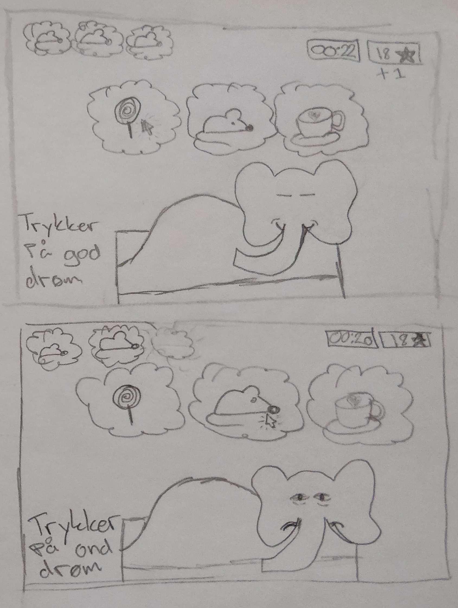
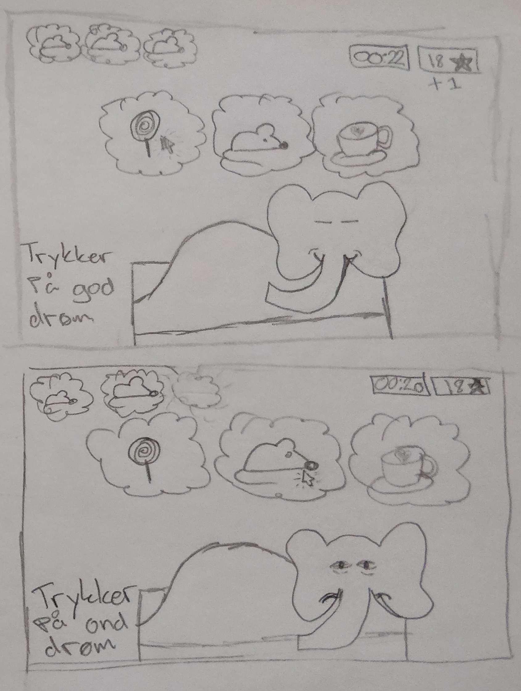

Portfolio v1
Prototype af idé til en ny vejledningskø til KEA

KeaKøen
Prototype af idé til en ny vejledningskø til KEA

Det nye Fronter
Prototype af forslag til en ny lagringsplatform for KEA

Skal vi snakke?
Et spil om billeddeling, lavet for Sex & Samfund

Sweet Dreams
Point-and-click spil lavet i HTML, CSS & Javascript

Ingolfs Kaffebar
Re-design af website for Ingolfs Kaffebar

Interview
Interview med B-rolls med NanoCosplay

Stilartsite
Et website om Street art, lavet i HTML & CSS


 
